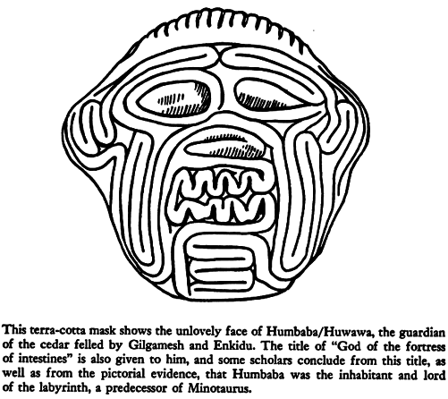
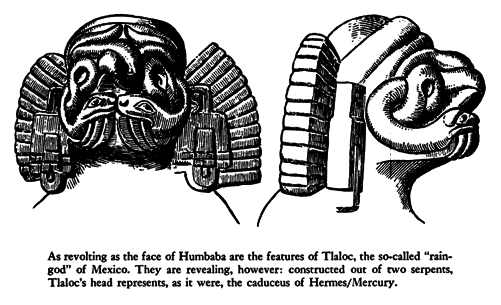
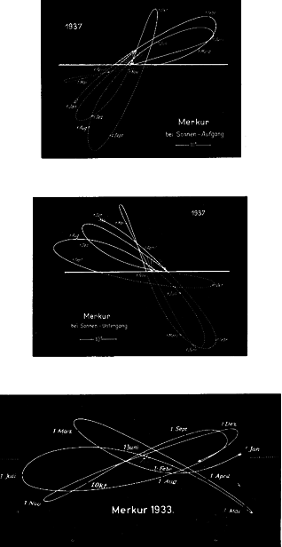
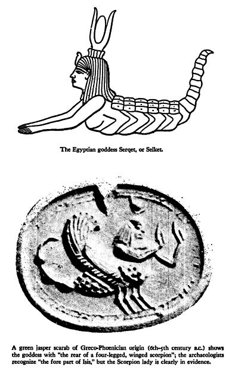
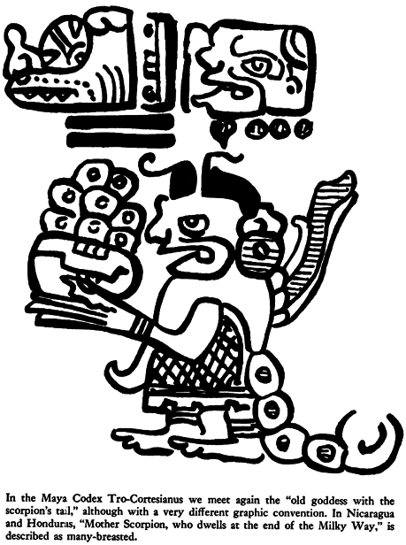
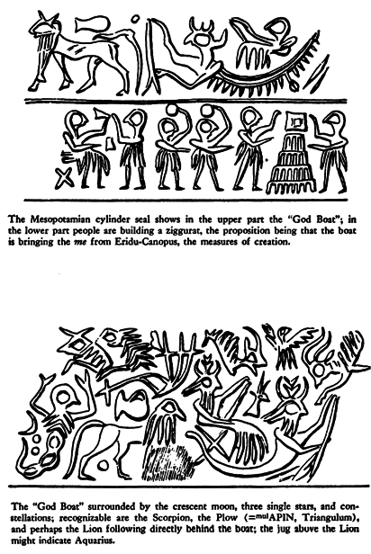
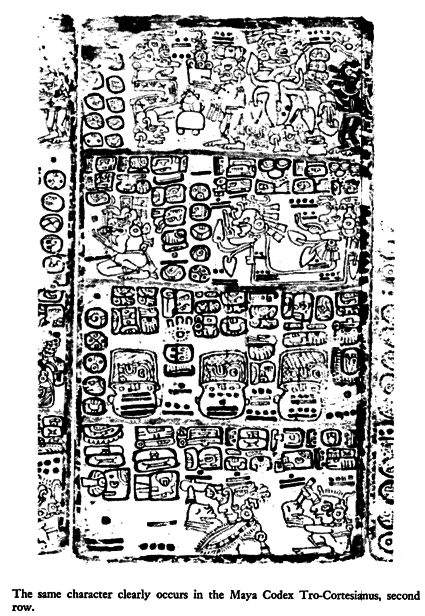
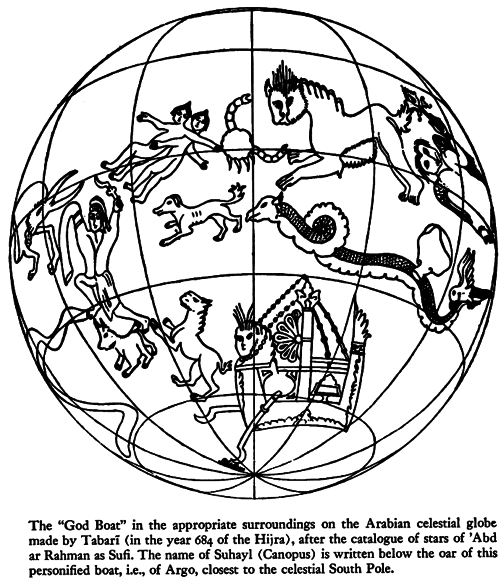

XXII. The Adventure and the Quest
THE EPIC OF GILGAMESH in its first recorded version goes back to Sumerian times. [1] It has been rehearsed with variants by Hurrians and Hittites, by Babylonians and Assyrians. Even in the best recensions there are large gaps, many tablets are damaged beyond repair, and to aggravate these detrimental conditions one must add the efforts of a goodly number of specialists which have not helped to clarify matters.
The story has been told many times over and it appears to be fairly secure in its main lines, a patrimony of world literature. Misleading as this appearance is — the way through those texts being incredibly slippery — it is best to leave it at face value for the present, giving only a brief outline of the accepted scheme in Heidel's version. Then it will be possible to examine certain difficult points which may eventually upset the scheme altogether.
Gilgamesh is claimed to have been one of the earliest kings of Uruk (or Erech). The circumstances of his fabled birth make him two-thirds god and one-third man, which makes him — in the sexagesimal system of Mesopotamia — two-thirds of 60 (= Anu) = 40, the number which characterized Enki-Ea, whence the latter's denomination of "Shanabi (= 2/3, i.e., of 60), and Nimin (Sumerian = 40)." [2] Be that as it may, it is told that he lives in splendor and dissoluteness, and makes a nuisance of himself until the gods bring relief to his people by rearing a human being, either twin or counterpart, [3] who can stand up to him. It is Enkidu, the man of the Wilds, a kind of wolf-child as simple as the beasts he plays with, a happy son of nature, hairy all over, grown to enormous strength. A harlot is sent out to seduce him, and through her he learns love and the ways of man, and is lured into the city (appendix #24).
His first encounter with Gilgamesh is a fierce battle which rocks the community house and seems to damage the doorpost (appendix #25) until the king manages to subdue Enkidu and decides he is worthy of becoming his friend and playmate.
Together they plan an expedition to the great Forest, to overcome the terrible ogre Huwawa or Humbaba, [4] whom the god Enlil, the so-called "god of storm" or "god of air," had appointed as its guardian. Indeed, "Enlil has appointed him as a sevenfold terror to mortals . . . his roaring is (like that of) a flood-storm, his mouth is fire, his breath is death!" [5]
Even if it is taken for granted that fights with dragons or ogres were a popular subject once upon a time, some dry data on this "monster" would do no harm. He "is invariably called a god in the texts" [6] and appears to correspond to the Elamitic god Humba or Humban, who shares the title "the prevalent, the strong" with the planets Mercury and Jupiter and with Procyon (alpha Canis Minoris). He occurs, moreover, in a star list, carrying the determinative mul (Babylonian kakkab) announcing stars, as mulHumba (appendix #26). The identification with Procyon may eventually turn out to be the decisive clue which will reconcile the Sumerian version with the many others.


Ancient texts do not become more lucid if every strange-looking aspect is silently omitted, and so it is well to mention that Humbaba is some kind of a "god of intestines." More than that, his head or face is built of intestines, and Langdon (MAR 5, 254) draws attention to the fact that "the face of this monster . . . is designed by a single winding line, except eyes." Böhl, moreover, in his inquiry on the Babylonian origin of the labyrinth, [7] pointed out the Babylonian notion of the entrails as a labyrinthic "fortress of intestines."
This much about the "person" Humbaba, who is, evidently, no primitive monster at all, the less so, as his unattractive face strikingly resembles the features of Tlaloc, the so-called "rain-god" of the Aztecs, whose face is built up of two serpents. Precipitate identifications lead only to mischief, [8] and the "Case Humbaba" is not even partly solved, despite many efforts.
The only established features of the story seem to be that the heroes reached the forest of cedars, which is said to extend for "ten thousand double-hours" (say, 70,000 miles), and that they cut off the head of Humbaba after having felled, apparently, the largest of the cedars entrusted to Humbaba's guard by Enlil, but the feat is not accomplished without the powerful help of Shamash-Helios "who sends a great storm to blind the monster and put him at their mercy."
Returned to Uruk, Gilgamesh washes his hair and garbs himself in festive attire. As he puts on his tiara, Ishtar, the goddess of love (in Sumerian, Inanna), is entranced with his looks and asks him to marry her. Gilgamesh rejects her, reminding her in scornful words of what happened to her previous mates, including the hapless Tammuz, later known as Adonis.
It is not unusual for a hero to refuse the love, and the unheard-of presents, offered by a goddess. In every such case only two celestial personalities are possible candidates for this role: the planet Venus, and Sirius, alias Sothis, who has some of the reputation of a harlot. There is the story of Ugaritic Aqht, who shows mocking haughtiness to Anat; [9] of Picus who flatly turns down the offer of Circe and who is subsequently turned into the woodpecker by the angry goddess; there is Arjuna — a "portion of Indra" — who rejected the heavenly Urvashi, whom he regarded as the "parent of my race, and object of reverence to me . . . and it behoveth thee to protect me as a son." [10]



There is also Tafa'i of Tahiti (Maori: Tawhaki) who went with his five brothers courting an underworld princess. As a test, the suitors "were told to pull up by the roots an ava tree which was possessed by a demon, and which had caused the death of all who had attempted to disturb it." Three of the brothers were devoured by the demon; Tafa'i revived them, and then gladly renounced the hand of the princess. [11] (Ava = Kawa, and stands for the "next-best-substitute" for Amrita, the drink of immortality which is the property of the gods; mythologically Polynesian Kawa resembles almost exactly the Soma of Vedic literature; even the role of the "Kawa-filter" is an ancient Indian reminiscence; and, as befits the pseudo-drink-of-immortality, it is stolen, by Maui, or by Kaulu, exactly as happens in India, and in the Edda, and elsewhere).
Meanwhile Ishtar, scorned, goes up to heaven in a rage, and extracts from Anu the promise that he will send down the Bull of Heaven to avenge her. [12] The Bull descends, awesome to behold. With his first snort he downs a hundred warriors. But the two heroes tackle him. Enkidu takes hold of him by the tail, so that Gilgamesh as espada can come in between the horns for the kill. The artisans of the town admire the size of those horns: "thirty pounds was their content of lapis lazuli." (Lapis lazuli is the color sacred to Styx, as we have seen. In Mexico it is turquoise.)
Ishtar appears on the walls of Uruk and curses the two heroes who have shamed her, but Enkidu tears out the right thigh of the Bull of Heaven and flings it in her face, amid brutal taunts (appendix #27). It seems to be part of established procedure in those circles. Susanowo did the same to the sun-goddess Amaterasu, and so did Odin the Wild Hunter to the man who stymied him.
A scene of popular triumph and rejoicings follows. But the gods have decided that Enkidu must die, and he is warned by a somber dream after he falls sick. [13]
The composition of the epic has been hitherto uncouth and repetitious and, although it remains repetitious, it becomes poetry here. The despair and terror of Gilgamesh at watching the death of his friend is a more searing scene than Prince Gautama's "discovery" of mortality. [14]
"Hearken unto me, O elders, (and give ear) unto me!
It is for Enk(idu), my friend, that I weep,
Crying bitterly like unto a wailing woman
(My friend), my (younger broth)er (?) [15] who chased
the wild ass of the open country (and) the panther of the steppe.
Who seized and (killed) the bull of heaven;
Who overthrew Humbaba, that (dwelt) in the (cedar) forest — !
Now what sleep is this that has taken hold of (thee)?
Thou hast become dark and canst not hear (me)."
But he does not lift (his eyes).
He touched his heart, but it did not beat.
Then he veiled (his) friend like a bride ( . . . )
He lifted his voice like a lion
Like a lioness robbed of (her) whelps . . .
"When I die, shall I not be like unto Enkidu?
Sorrow has entered my heart
I am afraid of death and roam over the desert . . .
(Him the fate of mankind has overtaken)
Six days and seven nights I wept over him
Until the worm fell on his face.
How can I be silent? How can I be quiet?
My friend, whom I loved, has turned to clay." [16]
Gilgamesh has no metaphysical temperament like the Lord Buddha. He sets out on his great voyage to find Utnapishtim the Distant, who dwells at "the mouth of the rivers" and who can possibly tell him how to attain immortality. He arrives at the pass of the mountain of Mashu ("Twins"), "whose peaks reach as high as the banks of heaven — whose breast reaches down to the underworld — the scorpion people keep watch at its gate — those whose radiance is terrifying and whose look is death — whose frightful splendor [17] overwhelms mountains — who at the rising and setting of the sun keep watch over the sun." [18]
The hero is seized "with fear and dismay," but as he pleads with them, the scorpion-men recognize his partly divine nature. They warn him that he is going to travel through a darkness no one has traveled, but open the gate for him.
"Along the road of the sun (he went?) — dense is the dark (ness and there is no light)" (Tabl. 9, col. 4, 46). The successive stretches of 1, then 2, then 3 and so on to 12 double-hours he travels in darkness. At last it is light, and he finds himself in a garden of precious stones, carnelian and lapis lazuli, where he meets Siduri, the divine barmaid, "who dwells by the edge of the sea."
Under the eyes of severe philologists, slaves to exact "truth," one dare not make light of this supposedly "geographical" item with its faint surrealistic tang. Here is a perfectly divine barmaid by the edge of the sea, called by many names in many languages. Her bar should be as long as the famed one in Shanghai, for she has along her shelves not only wine and beer, but more outlandish and antiquated drinks from many cultures, drinks such as honeymead, soma, sura (a kind of brandy), kawa, pulque, peyote-cocktail, decoctions of ginseng. In short, from everywhere she has the ritual intoxicating beverages which comfort the dreary souls who are denied the drink of immortality. One might call these drinks Lethe, after all (appendix #29).
Earnest translators have seriously concluded that the "sea" at the edge of which the barmaid dwells must be the Mediterranean, but there have also been votes for the Armenian mountains. Yet the hero's itinerary suggests the celestial landscape instead, and the scorpion-men should be sought around Scorpius. The more so as lambda ypsilon Scorpii are counted among the Babylonian mashu constellations, and these twins, lambda ypsilon, play an important role also in the so-called Babylonian Creation Epic, as weapons of Marduk.
In any case, Siduri, who must be closely related to Aegir and Ran of the Edda with their strange "Bierstube," — as well as to the nun Gertrude, in whose public house the souls spent the first night after death (see above, p. 208, n. 9) — takes pity on Gilgamesh in his ragged condition, listens to his tale of woe but advises him to return home and make the best of his life. Even Shamash comes to him and tells him: "The life which thou seekest thou wilt not find." But Gilgamesh goes on being afraid of eternal sleep: "Let mine eyes see the sun, that I may be sated with light." [19] And he insists on being shown the way to Utnapishtim. Siduri warns: "Gilgamesh, there never has been a crossing; and whoever from the days of old has come thus far has not been able to cross the sea, (but) who besides Shamash crosses (it)? Difficult is the place of crossing . . . And deep are the waters of death, which bar it's approaches." And she warns him that, at the waters of death, "there is Urshanabi, the boatman of Utnapishtim. Him let thy face behold." [20]
Siduri-Sabitu sits "on the throne of the sea" (kussu tamtim), and W. F. Albright, [21] picking up a notion of P. Jensen, thoroughly compares Siduri and Kalypso, whose island Ogygia is called by Homer "the Navel of the Sea" (omphalos thalassēs). Moreover, Albright points to "the similar figure of Ishara tamtim," Ishara of the sea, the latter being the goddess of Scorpius, [22] corresponding to the Egyptian Scorpius-goddess Selket, and to "Mother Scorpion . . . dwelling at the end of the Milky Way, where she receives the souls of the dead; and from her, represented as a mother with many breasts, at which children take suck, come the souls of the newborn." This last-mentioned "Mother Scorpion" is a legitimate citizen of ancient Nicaragua and Honduras, [23] an offshoot of the Mayas' "Old Goddess with a scorpion's tail." [24]
At this point there is still another recurrence of the disheartening breakdown in communication between scholars. The Orientalists, taking the story of Gilgamesh as a "normal epic," search for traces of him in the physical landscape of the Near East, ignoring the work of equally learned scholars, experts in the heavens, whose well-prepared and organized tool kits have long been available to help in the search. One wonders whether the Orientalists, intent on reconstructing texts, have ever even heard of Boll and Gundel and men like them. Perhaps not, because they pass them by without a word. In any case, it is appropriate here to mention once again two valuable tool kits assembled by Franz Boll, [25] who presents the whole tradition on the constellations "Hades", "Acherusian lake", "ferry man", with many more details than are needed now, as they have survived in astrological tradition. These topoi are found together around the southern crossroads of Galaxy and ecliptic, between Scorpius and Sagittarius. Boll points out that, instead of the Scorpion people, [26] Virgil (Aeneid 6.286) and Dante posted centaurs at the entrance of the underworld, representing Sagittarius. And so back to the quest; Gilgamesh faces Urshanabi, expecting to be ferried over the waters of death. The boatman demurs: the "stone images" have been broken by Gilgamesh appendix #31). But at length he instructs the pilgrim to cut down 120 poles, each sixty cubits (thirty yards) in length. With these he must punt the boat along, so that his hands may not touch the waters of death. At last they reach the far shore; there is Utnapishtim the Distant. The hero is puzzled: "I look upon thee, thine appearance is not different, thou art like unto me. My heart had pictured thee as one perfect for the doing of battle; (but) thou liest (idly) on (thy) side, (or) on thy back; (Tell me), how didst thou enter into the company of the gods and obtain life (everlasting)?" [27]
Utnapishtim is spry enough to tell in great detail the story of the Deluge. He tells how Enki-Ea has warned him of Enlil's decision to wipe out mankind, and instructed him to build the Ark, without telling others of the impending danger. "Thus shalt thou say to them: (I will . . . go) down to the apsu and dwell with Ea, my (lor)d." He describes with great care the building and caulking of the ship, six decks, one iku (acre) the floor space, as much for each side, so that it was a perfect cube, exactly as Ea had ordered him to do. This measure "1-iku" is the name of the Pegasus-square, and the name of the temple of Marduk in Babylon, as is known from the New Year's Ritual at Babylon, where it is said: "Iku-star, Esagil, image of heaven and earth." [28] Shamash had let Utnapishtim know when to enter the ship and close the door. Then the cataracts of heaven open, "Irragal (= Nergal) pulls out the masts (appendix #32); Ninurta comes along (and) causes the dikes to give way; The Anunnaki [29] raised (their) torches, lighting up the land with their brightness; The raging of Adad reached unto heaven (and) turned into darkness all that was light. [30] . . . (Even) the gods were terror-stricken at the deluge. They fled (and) ascended to the heaven of Anu; The gods cowered like dogs (and) crouched in distress (?) [31] Ishtar cried out like a woman in travail; the lovely-voiced lady of the g(ods) lamented . . . 'How could I command (such) evil in the assembly of the gods! How could I command war to destroy my people, For it is I who bring forth (these) my people . . .' The Anunnaki-gods wept with her; The gods sat bowed (and) weeping."
The end of the story is almost exactly that of Noah's landing on the mountain, except that Noah sends out a raven and twice the dove, whereas Utnapishtim let fly dove, swallow, raven. [32]
When Enlil was still wroth because one family did escape, Enki-Ea, "who alone understands every matter" (11.176), took him to task: "How, O how couldst thou without reflection bring on (this) deluge?" He added severely that Enlil could have punished only the sinful, and spared the innocent. The remark is one that pious exegetes of the Bible are still left to ponder. Then Enlil went up to the Ark and apologized. He granted Utnapishtim and his wife "to be like unto us gods. In the distance, at the mouth of the rivers, Utnapishtim shall dwell" (11.194-95).
"But now as for thee," the old man concludes his tale (11.197ff.), turning to Gilgamesh, "who will assemble the gods unto thee, that thou mayest find the life which thou seekest? Come, do not sleep for six days and seven nights."
We gather a gentle hint there from the Ancient of Days (Sumerian: Ziusudra, with Berossos: Xisuthros), also called Atrahasis, "the exceedingly wise." It amounts to this: "Young man, you have come to the land where time has come to a stop, and the immortality granted to us consists in remaining conscious and partaking of truth while not being wholly awake. Now you try." But Gilgamesh cannot. "As he sits (there) on his hams, sleep like a rainstorm blows upon him" (11.200 ff.)

One can imagine how Atrahasis-Utnapishtim would explain some essentials during Gilgamesh's sleep. The Exceedingly Wise would point to "his like," to Kronos sleeping in his golden cave in Ogygia, as described by Plutarch, [33] and yet continuously giving "all the measures of the whole creation" to his beloved son Zeus, as described by Proclus. [34] The Exceedingly Wise would refer freely to characters faraway in time [35] and in geographical space, as only he is entitled to do — to Kiho-tumu, for instance, creator god of the Tuamotu islands, Kiho-tumu "the-AIl-Source" who sleeps, face downward, in "Great-Havaiki-the-Unattainable," and yet takes action when the "administration" oversteps the "laws" and measures given by him. In the most amiable words Utnapishtim would admonish the children of our century to perceive the divine mummies of Ptah and Osiris — Osiris the "strategos" of the Ship Argo — and to start to think about the mummies of gods, generally, about the idea of the Seven Sleepers of Ephesus on board the Argo, about the data given in the Liber Hermetis Trismegisti concerning the relevant degrees (in Taurus, dealing with latitudes south of the Ship) belonging to Saturn, meaning "continua vero delectatio, diminutio substantiae, remissio malorum." Atrahasis would tell of the Chinese "Ancient Immortal of the Celestial South Pole," of the numerous sleeping Emperors in Mountain Caves (appendix #33) — and the hours would pass like seconds, but one knows that Utnapishtim, half-dreaming, half-teaching, had all the time an eye on the sleeping "hero." He says to his wife: "Is this the strong man who wants life everlasting?" And then, he wakens the man, on the seventh day, and the startled Gilgamesh reacts thus: "Hardly did sleep spread over me, when quickly thou didst touch and rouse me."
Les jeux sont faits. Gilgamesh is given a change of raiment and told to go home; Urshanabi, the boatman, is told to escort him, and there is, evidently, no return again for him to pī nārāti, to the mouth of the rivers. But at the last minute, Utnapishtim's wife says to her husband: "Gilgamesh has come hither, he has become weary, he has exerted himself, What wilt thou give (him wherewith) he may return to his land?" Utnapishtim takes compassion and addresses the hero:
"Gilgamesh, I will reveal (unto thee) a hidden thing . . . There is a plant like a thorn . . . Like a rose (?) its thorn(s) will pr(ick thy hands). If thy hands will obtain that plant, (thou wilt find new life)" (11.264-70).
"New life" sounds misleading, and Speiser remarks: "Note that the process is one of rejuvenation, not immortality." [36]

To get hold of this plant, growing apparently in a tunnel leading to the Apsu which the hero has to open, Gilgamesh dives deep, weighting himself with stones. But then as he travels home with the boatman, he stops to take a bath in a well, a serpent (literally, earth-lion) comes up from the water, snatches the plant and, returning into the water, sloughs its skin. The last hope is gone — at least so it looks in the translations.
Since this is not a manual on the Epic of Gilgamesh, this whole affair of the plant, the diving, the fateful bath in the well, must stand as it is, even though every word in it is no better than a man-trap (appendix #34), to come to the point which is of particular relevance here.
Leaving the boat on the shore, Gilgamesh and the boatman walked for another 50 double-hours on the way home.
When they arrived in Uruk, the enclosure, Gilgamesh said to him, to Urshanabi, the boatman: "Urshanabi, climb upon the wall of Uruk (and walk about); inspect the foundation terrace and examine the brickwork, (to see) if its brickwork is not of burnt bricks, And (if) the seven wise men did not lay its foundation!" (11.301-305).
But before the Epic started (Tabl. 1, 19), it was said that "the Seven Wise Ones" had laid the foundation of ramparted Uruk. So the ring has been closed.
But what does it mean? Why is Urshanabi, of all people, asked to survey Uruk, enclosed — according to the rule — by seven walls? And what have the Seven Sages to do with the foundation of Gilgamesh's city?
To take the latter question first: the Seven Sages are the stars of the Big Dipper, the Indian Saptarshi, the Seven Rishis. [37] The solstitial colure, called the "Line of the Seven Rishis," happened to run through one after the other of these stars during several millennia (starting with ēta, around 4,000 B.C.): and to establish this colure is "internationally" termed "to suspend the sky" — the Babylonians called the Big Dipper "bond of heaven", "mother bond of heaven," the Greeks spelled it "Omphaloessa."
Next, why is it the business of the boatman from the "confluence of the rivers" (that is what pī nārāti is) to check the measures of Uruk? It is established that the boatman's name was "servant (or priest) of 40 or of 2/3," [38] and that makes him a "piece," or what-ever one prefers to designate it, of Enki-Ea, called Shanabi = 2/3 (of 60 = 40). Enki's residence is Eridu, at the confluence of the rivers, at mulNUNki = Canopus (alpha Carinae), the seat of the me, the norms and measures. From there these me have to be procured. Urshanabi, however, seems to be bound with close family ties to Enki-Ea, in fact to be his son-in-law, husband of Nanshe. [39]

Numerous texts and inscriptions show that Enki-Ea, Lord of the Apsu, was responsible for the ground plan of "temples," whether celestial or terrestrial ones. The one who actually drew up the plans, with the "holy stylus" of Eridu, was Nanshe, Enki's daughter. And to her, the wife of Urshanabi the boatman, the "holy stern of the ship was consecrated." [40]
Considering that Argo is a stern only, that Eridu-Canopus marks the steering oar of Argo, it is fair to conclude that Gilgamesh, bringing with him Urshanabi in person, had procured "the me from Eridu." This is how it is styled in the Sumerian "dialect"; [41] in the international mythical language the terminus technicus reads "to measure the depth of the sea." (Odysseus, more advanced and accordingly considerably more modest than Gilgamesh, did not even take over a veritable oar from Teiresias. He only procured the latter's advice, according to which he was, later, to take an oar and carry it inland until he found people who had never heard of or seen a ship) (appendix #35).
Now that Gilgamesh "surveys" the world is stated explicitly in a text. (That this truth is uttered involuntarily by the translator who meant to express "that he saw everything" makes it the more enjoyable.) The invocation, quoted by Lambert, says:
Gilgamesh, supreme king, judge of the Anunnaki,
Deliberative prince, then . . . of the peoples,
Who surveys the regions of the world, bailiff of the underworld,
lord of the (peoples) beneath,
You are a judge and have vision like a god.
You stand in the underworld and give the final verdict.
Your judgement is not altered, nor is your utterance neglected.
You question, you inquire, you give judgement, you watch and you
put things right.
Shamash has entrusted to you verdicts and decisions.
In your presence kings, regents and princes bow down.You watch the omens about them and give the decision. [42]
That neither this nor other clear hints make the slightest impression upon once-and-for-all Euhemerists goes without saying. Any unprejudiced student would at least ponder for some minutes about that opened water-tunnel or the well in which the "hero" was taking a bath, once he comes to learn about a text, also mentioned by Lambert (p. 43), dealing with the digging of wells, where "an instruction is given for the utterance of the words 'the well of Gilgamesh' . . . , as the well is being dug. Since, when water is reached, it must be libated to Shamash, the Anunnaki, and any known spirit, the well is thought of as a connexion with the underworld" (appendix #36).
It seems obvious that sooner or later the data on Gilgamesh — incompatible as they sound for the time being — have to be assembled on a common denominator. But this is not likely to be accomplished unless the specialists renounce several of their firm preconceptions and make up their minds to a thorough re-examination of the whole case.
For the time being it is worth paying attention to information such as that given by Strabo (16.1.5) on the tomb of Bel (ho tou Bēlou taphos) in Etemenanki, the Tower of Babylon, and to mind the baffling Mesopotamian texts dealing with gods cutting off each other's necks and tearing out each other's eyes. It well might be rewarding to look at the tombs of Anu and of Marduk, [43] to consider the fundamental role of the Abaton in Philae, tomb of Osiris, [44] and of divine sepulchers generally. The basic difficulty which has to be overcome is our ignorance of the concrete meaning of the technical term "tomb," whether one has to do with the Omphalos of Delphi, grave of Python, [45] with the "burial mound of dancing Myrina" (Iliad 2.814), with the burial mound of Lugh Lamhfada's foster mother, around which the Games of Taillte were performed, or with many others.
What is haunting is the suspicion that "Uruk" stands for a "new" realm of the dead, and that Gilgamesh is the one who was destined to "open the way" to this abode and to become its king, and the judge of the dead, like Osiris, and also Yama, of whom the Rigveda states (10.14.1-2): (1) "Him, who followed the course of the great rivers, and who discovered the way for many, the Son of Vivasvat, the gatherer of peoples — King Yama we honor with sacrifice. (2) Yama is the one who first discovered the way; this trodden path is not to be taken away from us; on that way that our forefathers travelled when they left us, on that way the later born follow each. his trail". [46]
That neither Yama's nor Gilgamesh's "way" was, originally, meant to last forever and ever, goes without saying. Again and again the me must be brought from Eridu, the Depth of the Sea must be measured respectively, and again and again the sky has to be "suspended" by means of the "Line of the Seven Rishis" — the huge precessional clock does not stop. What has been stopped, instead, is the understanding among the heirs of the mythical language who, out of ignorance, failed to adapt this idiom to "preceded" situations. Without thinking, they changed a movie into a set of stills, projected a complex motion into conventional posters, and destroyed, by this measure, all the sense of a carefully considered system. [47]
This might be dismissed as a minor tragedy, but it is just one of those "progressive measures" which violently interrupt the continuity of tradition. There must have been several such eruptive and reckless "corrections of style" — otherwise it would be utterly incomprehensible that all our most ancient texts consist of "Scholia" interpreting one or the other "antediluvian" "Book with seven seals." In the case of that neglected tragedy just mentioned, [48] a tragedy coming from absent-mindedness, the final blow was dealt to the tradition that had established "us," mankind, as a unity. And if we did not have Plato's Timaeus, it would be a hopeless task altogether to understand the reason which made it obligatory in those "archaic" times to watch the immense cosmic clock most carefully. Plato himself, to be sure, started on the way of all intellect — moving from thought to literature, from literature into philology, before flowing into nothing; but let us make it clear, this official "trend" is not going to detract us from our own unconditional respect.
This essay could spend many chapters on the Timaeus, that "topos" from which come and to which return all "rivers" of cosmological thought, and several more chapters on Phaedrus and Politikos, on the Epinomis (entartarosed by the label "Pseudo-"), but we make it short. We leave aside the very "creation" which Timaeus styles like the manufacturing of a planetarium — which is exactly what makes this creation difficult for non-mathematicians. But it can be done without here. What counts is this: When the Timaean Demiurge had constructed the "frame," skambha, ruled by equator and ecliptic — called by Plato "the Same" and "the Different" — which represent an X (spell it Khi, write it X) and when he had regulated the orbits of the planets according to harmonic proportions, he made "souls." In manufacturing them, he used the same ingredients that he used when he had made the Soul of the Universe, the ingredients however, being "not so pure as before." The Demiurge made "souls in equal number with the stars (psychas isarithmous tois astrois), and distributed them, each soul to its several star."
There mounting them as it were in chariots, he showed them the nature of the universe and declared to them the laws of Destiny (nomous tous heimarmenous). There would be appointed a first incarnation one and the same for all, that none might suffer disadvantage at his hands; and they were to be sown into the instruments of time; each one into that which was meet for it, and to be born as the most god-fearing of living creatures; and human nature being two fold, the better sort was that which should thereafter be called "man."
And he who should live well for his due span of time should journey back to the habitation of his consort star and there live a happy and congenial life; but failing of this, he should shift at his second birth into a woman; and if in this condition he still did not cease from wickedness, then according to the character of his depravation, he should constantly be changed into some beast of a nature resembling the formation of that character, and should have no rest from the travail of these changes, until letting the revolution of the Same and Uniform within himself draw into its train all that turmoil of fire and water and air and earth that had later grown about it, he should control its irrational turbulence by discourse of reason and return once more to the form of his first and best condition.
When he had delivered to them all these ordinances, to the end that he might be guiltless of the future wickedness of any of. them, he sowed them, some in the Earth, some in the Moon, some in the other instruments of time (Timaeus 41E-42D).
There is no need to engage in the futile task of arguing the fairness of the Demiurge and his statement that all souls had the same chances in their first incarnation. That God must needs be innocent, and that man is guilty, anyway, is not a subject worth arguing with Plato. In fact, this is the hypothesis upon which the whole great edifice of Christian religion, and of our jurisdiction, rests.
In any event, the faultless Demiurge sowed the souls, equal in number to the fixed stars, in the "instruments of time" (i.e., the planets), among which Timaeus counts the earth; he sowed, actually, "each one into that which was meet for it."
What does that mean? Timaeus alludes here to an old system of connecting the fixed and the wandering members of the starry community — and not only the zodiacal "houses" and "exaltations" of the planets are meant, but fixed stars in general. One knows this approach from astrological cuneiform tablets which contain a considerable number of statements on fixed representatives of a planet, and vice versa. But there is not enough to explain the rules of this sophisticated scheme. To say it with Ernst Weidner: "In any case we have to do with a very complicated system. Only a renewed collection and revision of the whole material will perhaps allow us to solve the still existing riddles." [49] Ptolemy records the planetary character of fixed stars in his Tetrabiblos (1.9 "Of the Power of the Fixed Stars"), and so did all ancient and medieval astrologers. And, one might add, so did Indian and Mexican astrologers. (See above, p. 157, about the privilege enjoyed by Mars and the Pleiades of representing each other in Babylonia and India.)
The souls were, then, taken away from their fixed stars and moved to the corresponding planetary representatives, all according to rules and regulations. The Demiurge retired — turning into the character known under the title "Deus otiosus" — and the Time Machine was switched on.
Cornford, in his translation and commentary on the Timaeus, states (p. 146): "In the machinery of the myth it is natural to suppose that the first generation of souls is sown on Earth, the rest await their turn, unembodied, in the planets."
With all the respect due to Cornford, this is hardly going to work, and no "natural" suppositions can be admitted. The Demiurge of the Timaeus is too much of a systematist to allow for this solution. On the contrary, it stands to reason — if one carefully observes the manner in which the Craftsman God gradually and systematically attenuates his original mixture of Existence, Sameness and Difference as described in Timaeus 35 — that some new principle, some new "dimension," has to be introduced right here.
Eternity abides in unity highest and farthest "outside." Within, Time, its everlasting likeness, moves according to number, doing so by means of the daily turning of the fixed sphere in the sense of "the Same," the celestial equator, and by means of the instruments of time, the planets, moving in the opposite direction along "the Different," i.e., the ecliptic. Taken together, they represent the "eight motions." With the next step, from the planets to the living creatures, the motion according to number is ruled out. The fundamentally different quality of "motion" by generation must replace it (much to Plato's regret).
The planets, albeit "different" from the eternity abiding in unity as well as from the regular motion of the sphere of constellations, remain at least "themselves" and seven in number. The soul of man is not only reincarnated again and again, but it is subdivided further and further, since mankind multiplies, as does the grain to which man is so frequently compared. This simile — misinterpreted time and again by the fertility addicts — ought to be taken very seriously, and literally. The Demiurge did not create the individual souls of every man to be born in all future, he created the first ancestors of peoples, dynasties, etc., the "seed of mankind" that multiplies and is ground. to mealy dust in the Mill of Time. The idea of "Fixed Star Souls" from which mortal life started, and to which exceptionally virtuous "souls once released" may return anytime, whereas the average "flour" from the mill has to wait patiently for the "last day" when it hopes to do the same — this idea is not only a vital part of the archaic system of the world, it explains to a certain degree the almost obsessive interest in the celestial goings-on that ruled former millennia.
Although still, in our time, most children are admonished to behave decently, otherwise they may not have a chance to enter heaven, the Christians have abolished the Timaean scheme. They condemned as heresy the opinion of Origen according to which after the Last Judgment, the revived souls would have an ethereal and spherical body (aitberion te kai sphairoeides). This fundamental concept has been given voice in many tongues throughout the "Belt of High Civilization." Sometimes the imagery is unmistakable, sometimes it is ambiguous enough to mislead modern interpreters completely, as when the starry "seed" of population groups comes our way under the title of a "totem." But among the unmistakable kind is a rabbinical tradition which says that in Adam were contained the 600,000 souls of Israel like so many threads twisted together in the wick of a candle; the more so, as it is also said: "The Son of David (the Messiah) will not come before all souls that have been on the body of the first man, will come to an end." [50] Unmistakable, also, is the myth of the Skidi Pawnee of the Great Plains dealing with "the last day": "The command for the ending of all things will be given by the North Star, and the South Star will carry out the commands. Our people were made by the stars. When the time comes for all things to end our people will turn into small stars and will fly to the South Star where they belong." [51]
As mentioned in the chapter on India (p. 77), the Mahabharata reports how the Pandavas toiled up the snowy mountain and were lost, and how Yudhishthira was finally removed bodily to heaven. Although they were planetary "heroes," the wording of how they came to their end is revealing with respect to mere human beings. The said heroes are calIed "portions" of the gods, and when the third world comes to its end and the Kali Yuga begins — it could not begin "as long as the sole of Krishna's holy foot touched the earth" — these "portions" are reunited with the gods of whom they are a part. Krishna returns into Vishnu, Yudhishthira into Dharma, Arjuna is absorbed by Indra, Bala Rama by the Shesha-Serpent, and so forth.
These examples will do. What they demonstrate is this: the Timaeus and, in fact, most Platonic myths, act like a floodlight that throws bright beams upon the whole of "high mythology." Plato did not invent his myths, he used them in the right context — now and then mockingly — without divulging their precise meaning: whoever was entitled to the knowledge of the proper terminology would understand them. He did not care much for the "flour" after all.
Living in our days, where nothing is hidden from the press and where every difficult science is "made easy," we are not in the best condition to imagine the strict secrecy that surrounded archaic science. The condition is so bad, indeed, that the very fact is often regarded as a silly legend. It is not. The need for treating science as reserved knowledge is gravely stated by Copernicus himself in his immortal work, the Revolutions of Celestial Orbs. An adherent of the Pythagorean conception since his student days in Italy, he acknowledges the inspiration he owes to the great names of the School, like Philolaos and Hicetas, that he had learned from the classics, and who, he says, had given him the courage to oppose the philosophical notions current in his own time. "I care nothing," he writes in his dedication to the Pope, "for those, even Church doctors, who repeat current prejudices. Mathematics is meant for mathematicians . . ." It is the authority of these ancient masters which gave him the independence of judgment to discover the central position of the sun in the center of the planetary system. A shy and retiring scholar, he appeals to that great tradition, which even in the time of Galileo was called "the Pythagorean persuasion," to advance what was commonly considered a revolutionary and subversive theory. But if he did not bring himself to publish until his last years, it was not from fear of persecution, but from an ingrown aversion toward having the subject bandied around among the public. In the first book, he quotes from a "correspondence" among ancient adepts which is probably an ancient pastiche, but shows their way of thinking: "It would be well to remember the Master's precepts, and to communicate the gifts of philosophy to those who have never even dreamt of a purification of the soul. As to those who try to impart these doctrines in the wrong order and without preparation, they are like people who would pour pure water into a muddy cistern; they can only stir up the mud and lose the water."
Creating the language of the philosophy of the future, Plato still spoke the ancient tongue, representing, as it were, a living "Rosetta stone." And accordingly — strange as it may sound to the specialists on Classical Antiquity — long experience has demonstrated this methodological rule of thumb: every scheme which occurs in myths from Iceland via China to pre-Columbian America, to which we have Platonic allusions, is "tottering with age," and can be accepted for genuine currency. It comes from that "Protopythagorean" mint somewhere in the Fertile Crescent that, once, coined the technical language and delivered it to the Pythagoreans (among many other customers, as goes without saying). Strange, admittedly, but it works. It has worked before the time when we decided to choose Plato as Supreme Judge of Appeals in doubtful cases of comparative mythology, for example, when H. Baumann [52] recognized the myth of Plato's Symposium (told, there, by Aristophanes) as the skeleton key to the doors of the thousand and one myths dealing with bisexual gods, bisexual souls, etc.
Plato knew — and there is reason to assume that Eudoxus did, too — that the language of myth is, in principle, as ruthlessly generalizing as up-to-date "tech talk." The manner in which Plato uses it, the phenomena which he prefers to express in the mythical idiom, reveal his thorough understanding. There is no other technique, apparently, than myth, which succeeds in telling structure (again, remember Kipling, and how he tackled the problem by telling of the "ship that found herself" — see above, p. 49). The "trick" is: you begin by describing the reverse of what is known as reality, claiming that "once upon a time" things were thus and so, and worked out in a very strange manner, but then it happened that . . . What counts is nothing but the outcome, the result of the happenings told. Generally, it is overlooked that this manner of styling is a technical device only, and the mythographers of old are accused of having "believed" that in former times everything stood on its head (see above, p. 292, n.14, about the deplorable Mesopotamians who were unaware of their own mortality before the Gilgamesh Epic was written).
Since it is an actual language, the idiom of myth brings with it the emergence of poetry. Every classical philologist has to admit, for instance, that Hyginus and his like report the mythical plots rather faithfully in 3-10 lines of "correct" idiom which sounds hardly more interesting than average abstracts, whereas this instrumental language, when used by Aeschylus, remains soul-shaking even to this day. But, however vast the difference of poetical rank among the mythographers, the terminology as such had been coined long before poets, whose names are familiar to us, entered the stage. To say "terminology," however, sounds too dry and inadequate, for out of this mint have come clear-cut types — surviving for example, in the games of our children, in our chess figures and our playing cards — together with the adventures destined to them. And this spoken imagery has survived the rise and fall of empires and was tuned to new cultures and to new surroundings.
The main merit of this language has turned out to be its built-in ambiguity. Myth can be used as a vehicle for handing down solid knowledge independently from the degree of insight of the people who do the actual telling of stories, fables, etc. In ancient times, moreover, it allowed the members of the archaic "brain trust" to "talk shop" unaffected by the presence of laymen: the danger of giving something away was practically nil.
And now, coming back for a while to "The Adventure and the Quest," one should emphasize that it is, of course, satisfactory to have cuneiform tablets and that it is reassuring that the experts know how to read different languages of the Ancient Near East; but Gilgamesh and his search for immortality was not unknown in times before the deciphering of cuneiform writing. This is the result of that particular merit of mythical terminology that it is handed down independently from the knowledge of the storyteller. (The obvious drawback of this technique is that the ambiguity persists; our contemporary experts are as quietly excluded from the dialogue as were the laymen of old.) Thus, even if one supposes that Plato was among the last who really understood the technical language, "the stories" remained alive, often enough in the true old wording. Accordingly, one can watch how the hero of the "Romaunt of Alexander," in his own right an undisputed historical personality, slipped on Gilgamesh's equipment, while at the same time slipping off whole chapters of sober history.
Alexander had to measure the depth of the sea, he was carried by eagles up into the sky, and he traveled to the most unbelievable "seas" in search of the water of immortality. Expecting it to be in Paradise he sailed up the Nile, or the Ganges — but why repeat the chapter on Eridanus? A true replica of Gilgamesh, Alexander sailed to the magic place whence all waters come and to which they return. And if it was, allegedly, a serpent ("earth-lion") who deprived Gilgamesh of the rejuvenating plant, the Alexander of the fable was defrauded unwittingly by a fish — just a salted one taken along as travel supply. But he was consciously betrayed by the cook Andreas (according to Pseudo-Kallisthenes), who had noticed the fish coming to life when it fell into the brook and who drank of the water himself without telling Alexander of this discovery. The king, in his righteous indignation, had him thrown into the sea with a millstone around his neck, thus effectually preventing the cook from enjoying his immortality.
The range of significant variations of the many Alexander stories precludes anything more than superficial remarks about them, but they are relevant to Gilgamesh who has, perforce, been abandoned in a darkness which is in large part artificial. It is possible to outline some questions that may stir the problem of Gilgamesh out of its stagnation. There is also one detail that points in the direction of a proposition already put forward concerning Gilgamesh (p. 304).
Alexander, says the fable, interrogates the Oracle of Sarapis in Egypt just as Gilgamesh interviewed Utnapishtim. Sarapis answers evasively as concerns the span of life allotted to Alexander, but he points to the foundation of Alexandria and announces that the king will last on in this city "dead and not dead," Alexandria being his sepulcher. In another version Sarapis states: "But after your death, you will be placed among the gods, and receive divine worship and offerings by many, when you have died and, yet, not died. For your tomb will be the very town which you are founding." [53]
The grotesque monster Huwawa appears to be the pointer. Whatever approach is chosen, Huwawa's connection with Procyon, Jupiter and/or Mercury [54] should be taken into consideration, the more so, as the Hurrian fragments seem to know the poem under the title of "Epic of Huwawa." [55] And along with this consideration, the proper attention will have to be paid to the Babylonian name of Cancer, namely Nangar(u), "the Carpenter." This is essential, because in the twelfth tablet of the Gilgamesh Epic, preserved only in Sumerian language, Gilgamesh complains bitterly of having lost his "pukku and mikku," instead of having left them "in the house of the carpenter," [56] where they would have been safe, apparently. [57]
Whoever reads the Epic in many translations is not likely to overlook the indications of a "fence," or/and a "doorpost," or frame of a door at such an improbable place as Huwawa's great cedar "forest." Why not also try to look out for the "enclosing of Gog and Magog" accomplished by Alexander and told still in the 18th Sura of the Koran, the same Sura which deals with the coming to life of Moses' travel-supply-fish at the "confluence of the rivers?" This "enclosure" is a great theme of medieval folklore, kept fearsomely alive by the sudden appearance of Mongol invasions. The story ran that Alexander had built iron gates over the mountain passes, that the monstrous brood of the Huns, spawning over the limitless plains of the East, had been kept in awe by trumpets sounding from the pass betokening a seemingly immortal conqueror, the "two-horned" hero who watched over the passes. But the trumpets had suddenly fallen silent, and a dwarf from the horde risked his way to the pass, and found the gate deserted. The trumpets were nothing but aeolian harps, stilled by a tribe of owls which had nested in them. [58]
The ancient story of Gog and Magog, revived from the Arabs, plays such a decisive role in the Romance of Alexander that we might rely upon the antiquity of the scheme: actually it ought to occur in our Epic. Considering that Gilgamesh appears to open a new passage, the former one has to be closed. This also was done in the case of Odysseus. Once he arrived in Ithaca with the stipulations for a new treaty with Poseidon, the poor Phaeacians were done for. There was to be no Scheria anymore. This station being closed up, growing mountains were to block off the beautiful island of Nausikaa which was, henceforth, "off limits" for travelers. There are some striking parallels available in Central Polynesia: when the younger Maui stole the fire from "old Maui" (Mauike, Mahuike, etc.) in the underworld, the passage which he had used was shut from that day on. This is particularly remarkable because "it was by the way of Tiki's hole that Maui descended into the home of Mauike in search of fire." Tiki (Ti'i) was the "first man," and "Tiki's hole had been the route by which souls were supposed to pass down to (H)Avaiki.? Thus, the souls had to find another way "after this hole had been closed," [59] that is, after young Maui had accomplished the theft of fire.
The notion of fire, in various forms, has been one of the recurring themes of this essay. Gilgamesh, like Prometheus, is intimately associated with it. The principle of fire, and the means of producing or acquiring it are best approached through them.